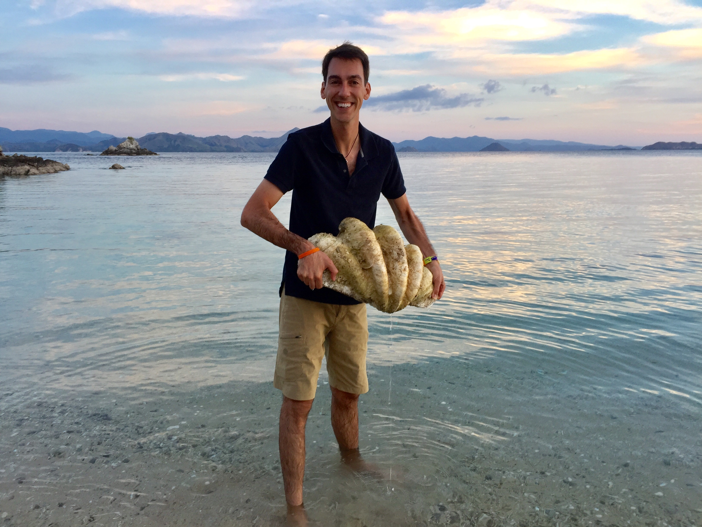

About Me

My name is Kyle Seiverd and I am a high school science teacher at Toms River High School North.
Passion: Wildlife Conservation
Hero: Dr.Jane Goodall
Favorite Animal: Elephant
Bucket List Item: Visit every continent (5 down, 2 more to go!)